此處為說明遊戲整體劇情，其中包含了遊戲流程所接觸到的劇情、世界觀與角色設定等。
遊戲隨著三關代表著主角不同的探索歷程：脫離現實（一）、打敗心魔（二）、找回夢想（三）。
最終結局將根據購買道具的不同，而進入到不同的結局（使用對話進行引導）。
透過甦醒醫療技術，主角可以進入到自己的精神世界，也就是玩家操控主角所在的「遊戲世界」。正面是藉由主角成年後人格所「感受、理解到的世界」；反面則是主角童年時人格所「感受、理解到的世界」。因此，正面世界的場景與物件自然會比較貼近現實（因為是成年思維所看到的），而反面則較不受拘束（童年有很多的想像）。無論是哪一個世界，客觀來說都不屬於現實。在兩個世界切換時有以下幾點設定：
天空之城原型為現實世界坐落於義大利的「白露里智奧」原型。遊戲世界設定為一群嚮往著天空的人們所建造的城堡。雖然沒能完成翱翔天際的夢想，卻也找到了高聳入雲的、離天空最近的一個夢想之地，興建他們的城市。父親當年開著飛機並載母子三人就是為了前進該地，但此次飛行因為失事而未抵達目的地，也成了父親最後一次的飛行（最後波紋）。
如果主角最後擁有雅努斯之石，會在劇情畫面中看到關於這顆石頭的消息：其實是他父親遺留下來的石頭。白露里智奧的岩石很珍貴和稀有，所以會引起人的好奇心。岩石的碎片被作為護身符，是因為其特別堅硬。象徵著在考驗之後淬煉出來的部分。
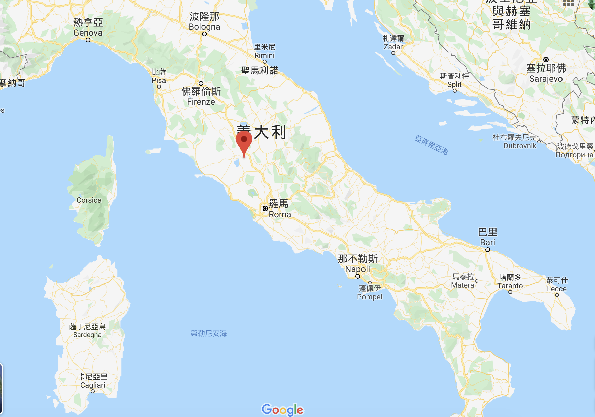貨幣是天空之城居民所使用的貨幣，上有雙面神「Janus」的圖案，結合硬幣本身也可以翻轉再次強調「Flip」的意象。主角會在不同地點獲得貨幣，最後需要使用貨幣購買關鍵道具，將決定最終結局的走向。
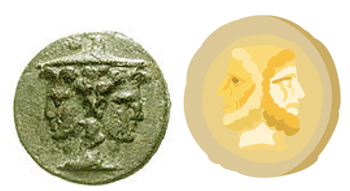第一關的墓碑就是父親的，當年飛機失事後，母子漂流到小島上便為父親做了簡陋的墓碑（但當時並沒有墓碑符號）。遊戲世界（精神世界）中的墓碑出現了符號，原型為現實世界「白露里智奧」的飛行路線。象徵父親當時未能完成的飛行，因此才會出現在父親的墓碑上。
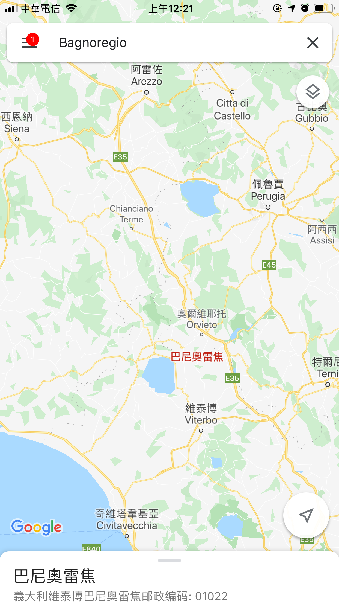 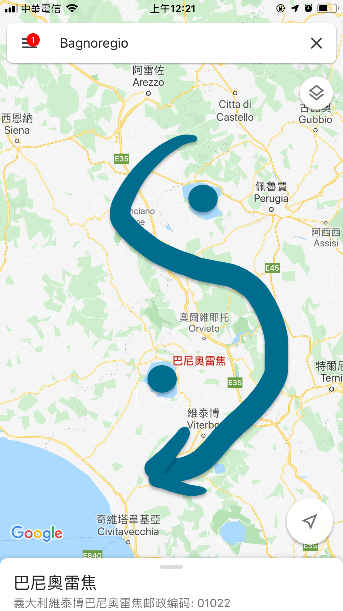渡鴉在現實世界被認為與死亡及亡魂有所關連。在瑞典，渡鴉被認為是被殺之人的鬼魂；在德國，牠們則是被咒詛之人的靈魂（維基百科 ）。遊戲中象徵了主角父親亡魂的引導。深藏於潛意識內的父親以渡鴉出現在世界中，幫助主角重拾童年的回憶並順利找回夢想（甦醒）。
渡鴉也可以象徵主角的創傷記憶點。遊戲中渡鴉是存檔點，也時常跟著玩家待在某些不顯眼的位置。但是一直都在，就如同主角童年的創傷。
遊戲世界的筆記本其實就是主角小時候用來記筆記的，在遊戲內主角似乎又回到了童年常常寫筆記的情況。筆記本封面底有張父親的照片，也代表著「筆記」是由父親教導給主角的習慣。
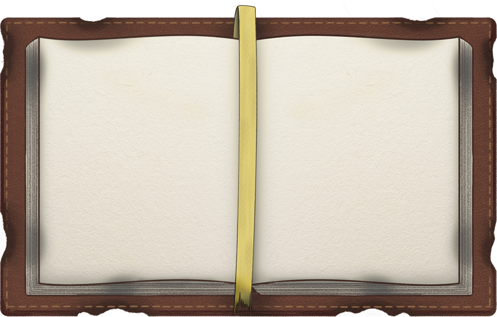主角即為玩家操縱的角色，主角相關劇情可參考「二、（一）、劇情發展」的主角人生經歷。如同機制設定，主角也有兩面（正面／反面），玩家可以在遊戲中進行切換。
形象為頭戴著工地用安全帽的中年大叔，手會輪流拿著各式工具。個性懶散、嗜睡、不負責任。基本上就是一個不愛工作、只想偷懶的傢伙，時常看到他在打瞌睡。說話說到一半可能直接睡著，話題容易圍繞在同一件工作上，並不斷地逃避。第二關初甚至走出工廠外偷懶，但卻因為側門被反鎖而無法回到工廠內。
象徵成年主角面對著大量工作時想逃避的心態，知道自己有很多工作要做，但還是選擇用睡眠來逃避。
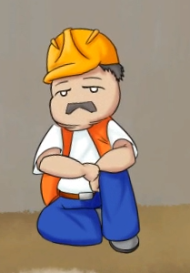形象為頭戴著廚師帽，手上有很多甜食，他也會時不時地舔著這些甜食。個性開朗、專心、很負責任。第二關為了準備宴會餐點，還自己去打獵，跟工頭形成對比。專心也和工頭形成對比，工頭連一件事都做不好。
象徵童年主角愛吃與能夠專注的性格，主角童年能夠專注在學習父親傳授的飛行知識，並追求夢想。
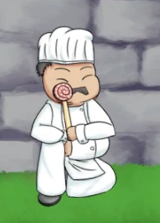形象為穿著保全制服的白髮老人（未來老人）。個性悲觀、被動、不想服從老闆的命令。雖然職責是看管工廠的安全，但卻只是佔著位置、頹廢度日。是一個對自己的工作沒有熱情的傢伙，也會對工作內容有許多埋怨。
象徵成年主角對現有工作的不滿意、抱怨。抱怨對現有工作和上司的不滿意，時常說些悲觀的話。
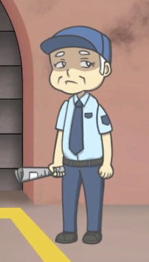形象為穿著盔甲的泰迪熊。個性忠誠（和保全的不忠形成對比）、剛毅木訥、果決。說話直接，而且也會時常表示自己必須擔保國王的安危。第二關當主角來到城堡時，也是最對身為外人的主角抱持懷疑的角色，因為身負守衛城堡的重任。
象徵童年主角兒時的玩伴，因為沒有其他朋友，只能跟玩具熊作伴，而玩具熊也忠實地守在主角身旁。
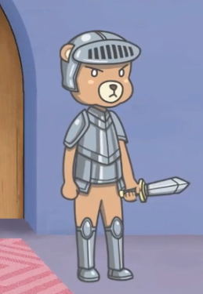形象為半人半機器人，有很多機器手臂拿著零件或是研究用道具。個性保守、拘謹、遵守秩序，但是對於工廠的人偶很了解而且會告訴主角很多知識（提示）。會說一些專業的事情、就事論事，不會去提到其他瑣碎的事。第二關會給予所有正面道具的提示，也會談到關於拓印的事情。
象徵成年主角在現有體制下只能乖乖遵守，逼自己跟著這套體制去成為一個有秩序的人，但是沒什麼自主性。
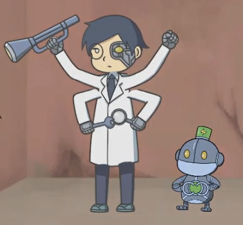形象為有很多手（六隻手臂）拿著不同的樂器（兩隻：小提琴、兩隻：管樂器、兩隻：鼓棒），有一隻猴子寵物（正面是小隻的機器人）負責敲鈸，身體設計成玩具的感覺。個性樂觀、崇尚自由、不受拘束（和研究員成為對比），樂於演奏出屬於自己的音樂。喜歡交談，但是一談到自己有興趣的事物甚至會不顧他人，進入自己的異想世界。可能會講一些其他事情，並提到關於這座城堡的運作，對於一般人覺得尋常的事也會感到很新奇。
象徵童年主角小時候的玩心，有很多樂器跟手臂表示甚麼都想玩，也有對新知好奇的心理。
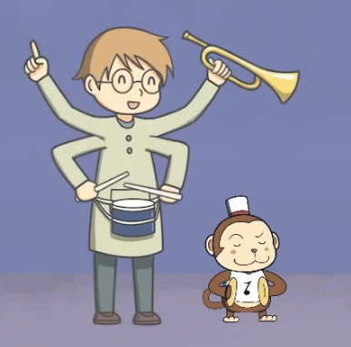